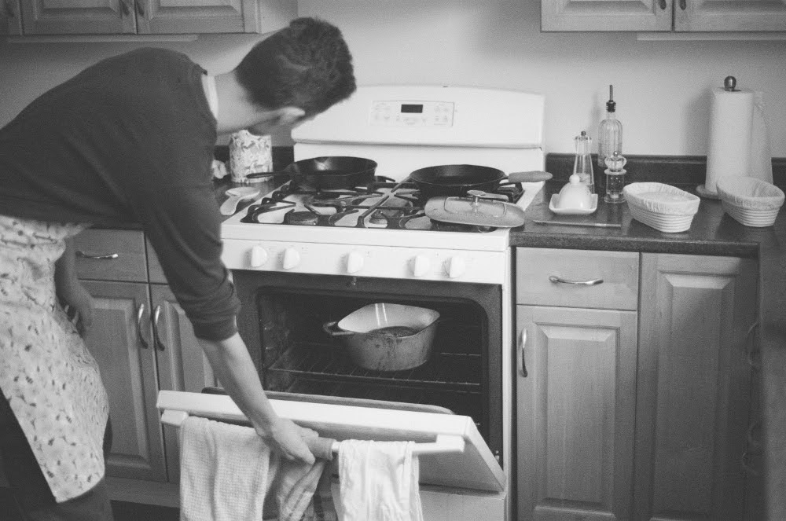

What I have learned about making sourdough (so far)
July 4, 2022
I began making sourdough in February of this year. At first, I tried to loosely follow some Youtube guides that I came across, but I found that the results were inconsistent and often inedible. This is how some of the early loaves I made looked:
This loaf went to my hens.
This loaf is better than the left, but still more dense than would be best. Edible, but not as good as bakery bread.
There were more loaves that were somewhere between the two above in terms of quality. Now, making a loaf of sourdough bread is typically a full day’s effort (I’ve figured out ways to make the process more flexible for a busy schedule, which I’ll discuss more later), so getting a mediocre result after a full day’s work is pretty discouraging, never mind when the whole loaf needs to be tossed! This would not do, so I decided to get serious about making sourdough.
I downloaded an e-book copy of Tartine Bread by Chad Robertson, which contains a step-by-step recipe for what he calls “the country loaf”, i.e. a basic sourdough. Following this guide closely transformed my results instantly; now I was consistently getting light, fluffy, moist, delicious sourdough bread. I will take the chance to brag a bit here and say that I now prefer my own bread to almost any that I have bought in a bakery. Since I began using this book to bake bread, I have learned a couple of things about making sourdough through experimentation and note-taking. I will talk about some of these findings, but first I would like to elaborate on my note-taking process, and how it has helped me.

Delicious, fluffy sourdough. My first loaf using the Tartine recipe.
Careful note taking pays compound returns over time. Make bread; take notes; make break again, reviewing your notes from last time, take notes again; repeat. The first variable that I started playing around with once I was consistently producing edible loaves is hydration. Hydration refers to the water that a loaf contains, by weight, as a percentage of the weight of the flour used. For example, if I used 1000g of flour and 800g water, then I have an 80% hydration loaf. I had read that higher hydration loaves are a mark of artisanal bread, because working wet dough is challenging. When I started to boost my hydration to 80, 85, then 90%, I found that I loved the moist, spongy result. However, I also began to find that my loaves did not have the same “oven spring” (rise) and instead tended to be flatter and wider, losing their structure in the baking process. After doing some googling, I found out that higher-hydration loaves will not rise as much. Looking back through my notes, I was able to see the progression of how my loaves rose less the more hydration I used. I’ve now settled in the 75%-80% range, and am back to getting nicely structured loaves.

Loaves with 80% hydration

Loaves with 90% hydration. Very tasty, but the flatness of the loaf is not desirable
The other tool that has allowed me to get consistently good bread is the humble checklist. I have learned to use checklists for jobs that follow a process, even if you don’t think you need to. Checklists simply guard against forgetfulness, something I am often victim to. I use the same checklist for each loaf I make (I use a Notion.so template for my bread notes, so the checklist is right there at the top always). Before I started using checklists, I forgot to add salt to one of my loaves, and burned another by using the wrong oven temperature. These kinds of mistakes haven’t happened since I adopted the checklist.
I still mostly follow the Tartine country bread recipe, which makes two loaves at a time. Instead of baking the loaves serially, I bake both at once because I happen to have two dutch ovens. Another modification I have made is that I leave the dough in the same container for the entirety of the fermentation process, which saves me a dish. Some key things I really like about the Tartine process:
- stretch-and-folding the dough inside its container during the fermentation process saves a ton of mess and hassle, compared to dumping it on the counter to knead
- making two loaves at once makes the whole process feel a lot more worthwhile
- it’s a very simple recipe that makes great bread
The Tartine bread process is actually not a ton of work. From start to finish, it’s probably an hour or so of actual hands-on time. However, that labour is spread out over a ~24 hour period. The typical breadmaking schedule I have followed is something like this:
12:00PM day 1 - mix flour/water/starter
12:45PM - add salt, ferment all afternoon; stretch-and-fold ever half-hour or so
5PM - shape loaves
6PM - begin final proofing in fridge
8AM day 2 - bake
So while there isn’t a ton of actual labour, this is still a time-consuming process. In the days of WFH it was kind of nice to get up from my computer every half-hour to turn dough, but once I started working in the office again this wasn’t possible. Sourdough making became a weekend-only activity.
Looking to make the process more flexible, I began experimenting with doing the fermentation step in the fridge. The idea behind this is to stretch the fermentation out from taking ~4 hours at 25degC to taking a day or two in the fridge. Then, if I want to make a loaf, I can start it if I have an hour free on a weeknight, set it in the fridge to ferment, and shape it the next evening or the evening after. All I have to do is stretch-and-fold it every so often when I’m already in the kitchen. This has worked out pretty well so far. The longer fermentation results in more complex (and slightly sourer) bread flavours, but the effect is small and I actually like the taste better. A “fridge rise” schedule might look like this:
6PM day 1 - mix flour/water/starter
6:45PM - add salt; place in fridge for fermentation
day 2 - stretch and fold as convenient
6PM day 3 - shape loaves
7PM day 3 - begin final proofing in fridge
8AM day 4 - bake
The time between adding salt and shaping the loaves is fairly flexible, and could probably be between 1-2.5 days (I haven’t experimented enough with this method yet to know an exact range), meaning that this method can easily be integrated with a busy schedule.
My last learning so far: making your own bread is 100% worth it. Honestly, while I like the process, the majority of the reason why I have kept up consistently making bread is just how delicious the result is. Plastic-bag bread is ruined for me forever, and I don’t live very close to a good bakery. I’m trapped in a vicious cycle of baking and eating delicious bread and I can’t get out!
Photo by Alana Cristante